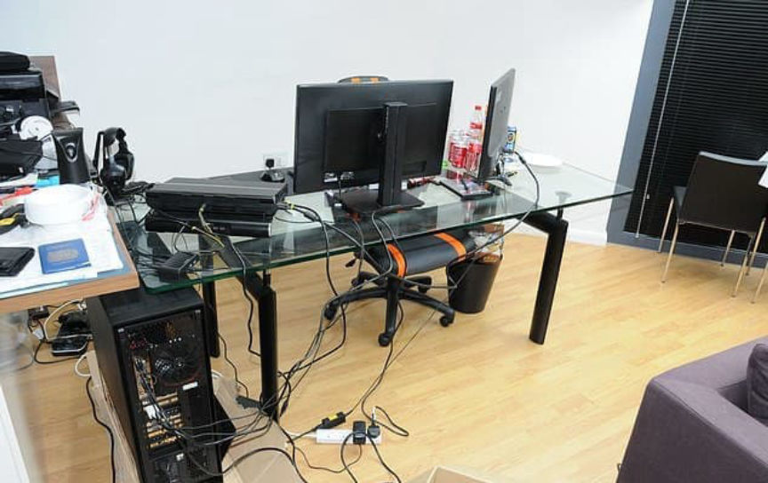
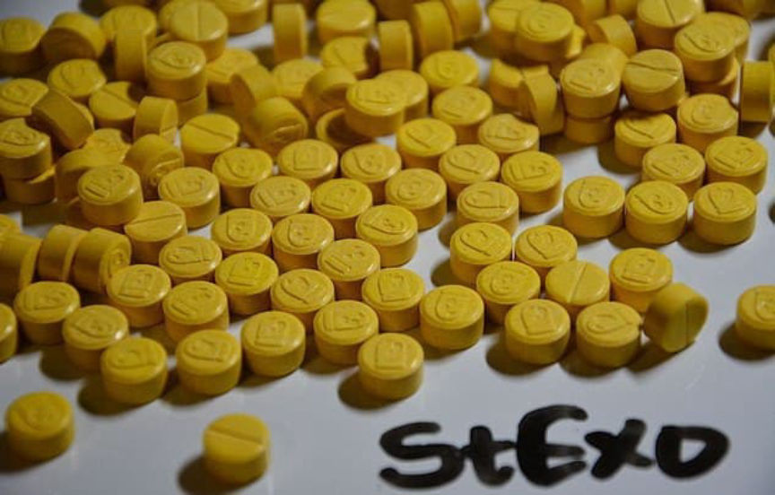
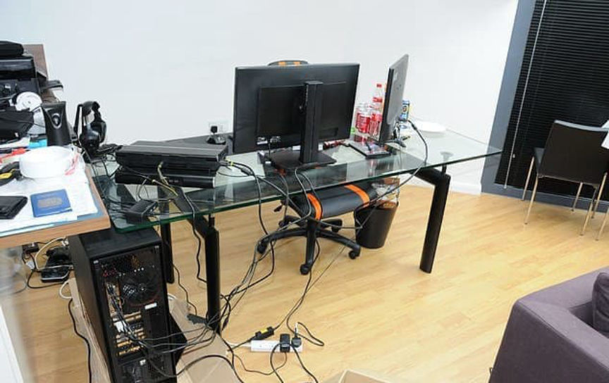
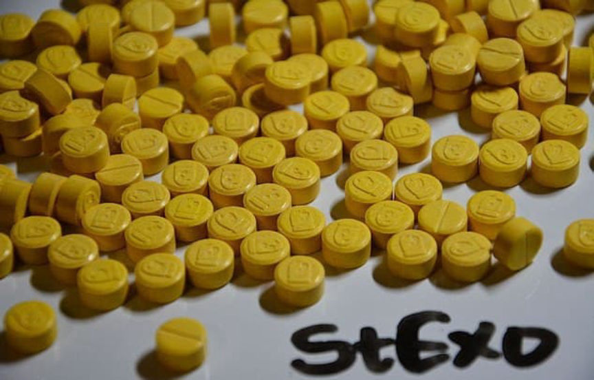

StExo Ordered to Forfeit 490,000 in Bitcoin
~2 min read | Published on 2021-11-03, tagged Cryptocurrency, Darkweb-Market, General-News, Seized, admin using 270 words.
Thomas White, one of the “guiding minds” responsible for Silk Road 2.0, was ordered to forfeit £493,550 ($684,300) from his Bitcoin holdings.

At Liverpool Crown Court, HHJ Teague QC ordered White, 26, to forfeit £493,550.00 from his Bitcoin holdings. White is currently serving a prison sentence for drug crimes, money laundering, and possession of child pornography. He pleaded guilty to supplying class A drugs and money laundering in connection with his role in the development and administration of Silk Road 2.0. The child pornography charges stemmed from content discovered by law enforcement officers when searching White’s electronic devices.

White was sentenced to five years and four months in prison at Liverpool Crown Court in 2019. At the time of sentencing, the National Crime Agency revealed that White had at least 50 Bitcoins in his possession.

Tyrone Surgeon, Branch Commander at the National Crime Agency, per the National Crime Agency press release:
“Thomas White was a well-regarded member of the original Silk Road hierarchy. He used this to his advantage when the original site was closed down and profited significantly from his criminal activity. This case proves that crime doesn’t pay – not only has he spent the last two years in prison, he now has to hand over nearly £500,000. This has been a complex, international investigation and highlights that we will use every tool at our disposal to disrupt organized criminals from profiting from their crime.”
White pictured after his 2014 arrest | NCA
At Liverpool Crown Court, HHJ Teague QC ordered White, 26, to forfeit £493,550.00 from his Bitcoin holdings. White is currently serving a prison sentence for drug crimes, money laundering, and possession of child pornography. He pleaded guilty to supplying class A drugs and money laundering in connection with his role in the development and administration of Silk Road 2.0. The child pornography charges stemmed from content discovered by law enforcement officers when searching White’s electronic devices.

White sold ecstasy pills on Silk Road and provided money laundering advice under the username “Stexo”
White was sentenced to five years and four months in prison at Liverpool Crown Court in 2019. At the time of sentencing, the National Crime Agency revealed that White had at least 50 Bitcoins in his possession.

White sold ecstasy pills on Silk Road and provided money laundering advice under the username “Stexo”
Tyrone Surgeon, Branch Commander at the National Crime Agency, per the National Crime Agency press release:
“Thomas White was a well-regarded member of the original Silk Road hierarchy. He used this to his advantage when the original site was closed down and profited significantly from his criminal activity. This case proves that crime doesn’t pay – not only has he spent the last two years in prison, he now has to hand over nearly £500,000. This has been a complex, international investigation and highlights that we will use every tool at our disposal to disrupt organized criminals from profiting from their crime.”